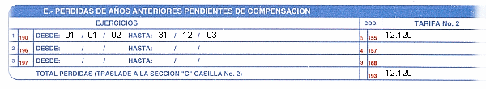

Secciones y sus relaciones
Cuando se colocan datos dentro de una forma, se aplican reglas que dirigen como será el aspecto final de la planilla, la relación entre cada una de las secciones y de estas con la forma en general.
- Según la naturaleza de la forma, esta debe comenzar a llenarse por alguno de los lados de la hoja (anverso o reverso) generalmente, se comienza por el reverso ya que es aquí donde se describe en detalle, los montos usados para la declaración.
- Por medidas de seguridad, los datos del contribuyente no pueden ser modificados. Esta es una de las razones por la cual el contribuyente debe ser ingresado en el sistema con la mayor veracidad posible. Si hay algún error en la información traída desde el archivo del contribuyente, la forma debe ser suprimida, el error corregido y nuevamente, debe asignarse una forma.
- El inicio / fin del periodo gravable es “inicializado” tomando el cuenta el mes de cierre. Estas secciones no son parte de los datos del contribuyente y pueden ser cambiadas.
- Las secciones que son el resultado de “trasladar” el monto de otra sección dentro de la forma no pueden ser editadas. Para que es ellas aparezca algún monto, deberá dirigirse a donde el mensaje indica y detallar los montos que allí se solicitan.
- Cuando un grupo de secciones están relacionadas, los valores de estas se presentan de izquierda a derecha. Es decir, para las secciones a, b, c se presenta el valor de c si b contiene algún valor y se presenta el valor de b si a contiene algún valor. Ej:

- En el ejemplo, se muestran tres secciones relacionadas ya que es necesario describir a las 3 para que la línea completa sea valida para el fisco. La sección 155 solo se presentara si la fecha hasta contiene algún valor y esta será presentada cuando fecha desde contenga una fecha valida. Mas aun, Solo se permitirá la entrada de la fecha desde de la segunda línea si existe algún monto en la sección 155.
- Si el valor de alguna de las secciones es borrado (para el caso de las fechas) o puesto en 0 o blanco, las secciones que se encuentran a su derecha y hacia abajo dejaran de presentarse.
- Algunas secciones de interés se presenta “---- o ----“ para indicar que no se ha olvidado llenar esta sección solo que no contiene ningún valor (0)
- Las secciones que realizan cálculos, en especial con unidades tributarias no son redondeadas hacia ninguna dirección (hace el entero menor o mayor). El único redondeo presente es el realizado directamente por el sistema operativo. Esto es debido a que los cálculos son efectuados con una precisión de 8 cifras decimales y los montos presentes en las formas son de 2.
- Algunas imágenes digitalizadas de la planilla que usamos durante la edición de una forma pueden dar la impresión de que la aplicación no esta trabajando como es debido. Esto es porque existen discordancias entre lo que aparece en la imagen de planilla y lo que realmente es aplicable según la ley. Ej.: en párrafos de conceptos de desgrávamen a personas naturales, se lee 750 UT de desgrávamen único y la ley dice 774. Otro ejemplo son errores aparentes de impresión u omisión que indican aplicar una tarifa cuando en realidad se aplica otra.
Ver
Editor de formas